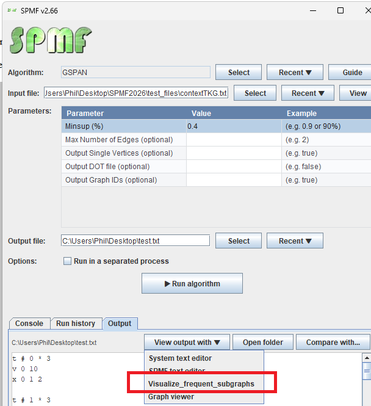
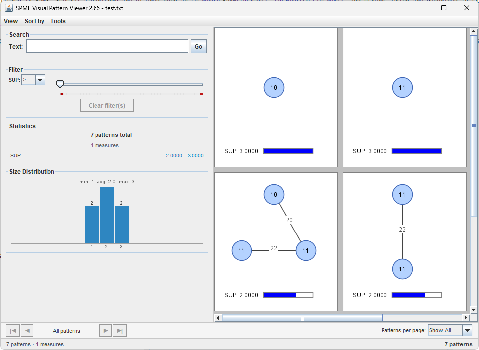

View frequent subgraphs with the Visual Pattern Viewer (SPMF documentation)
Frequent subgraphs are a type of patterns that can be produced by different algorithms offered in SPMF such as GSPAN, TKG, and other graph mining algorithms.
This page explains how to visualize the frequent subgraphs found by an algorithm using the Visual Pattern Viewer.
What are frequent subgraphs?
A labeled graph is a set of vertices and edges, having some labels. Let's illustrate this idea with an example. Consider the following graph:

This graph contains four vertices (depicted as yellow circles). These vertices have labels such as "10" and "11". These labels provide information about the vertices. For example, imagine that this graph is a chemical molecule. The label 10 and 11 could represent the chemical elements of Hydrogen and Oxygen, respectively. Labels do not need to be unique. In other words, the same labels may be used to describe several vertices in the same graph.
Now, besides vertices, a graph also contains edges. The edges are the lines between the vertices, here represented by thick black lines. Edges also have some labels. In this example, four labels are used, which are 20, 21, 22 and 23. These labels represent different types of relationships between vertices. Edge labels do not need to be unique. A graph is a connected graph if by following the edges, it is possible to go from any vertex to any other vertices.
The goal of frequent subgraph mining is to discover interesting subgraph(s) appearing in a set of graphs (a graph database). A frequent subgraph is a subgraph that appears in at least minsup percent of the graphs from the graph database.
How to run this example?
If you want to run this example using the graphical user interface of SPMF, follow these steps.
1) First, select a frequent subgraph mining algorithm offered in SPMF. Several algorithms are offered such as GSPAN, TKG, and others, which are described in the documentation of SPMF.
2) Then, in the user interface of SPMF, after selecting an algorithm and setting its input file path, output file path, and parameters, click "Run algorithm" and then in the "Output" panel, click on the button "View output using:", and select "Visualize_frequent_subgraphs" to visualize the discovered patterns.

The discovered patterns will be displayed using the Visual Pattern Viewer:

The Visual Pattern Viewer interface is quite intuitive. It displays each subgraph pattern visually with vertices arranged in a circular layout and edges connecting them. Each pattern also shows its value for each evaluation measure (such as support) using a colored bar.
The Visual Pattern Viewer offers several features such as:
- Viewing patterns using different layouts (grid, horizontal and vertical layout).
- Sorting patterns by size (number of vertices) and measure values.
- Searching patterns by vertex labels or edge labels.
- Filtering patterns using measure values (e.g., minimum support threshold).
- Displaying statistics about the number of patterns found.
- Showing a size distribution histogram of the patterns.
- Exporting the visualization as a PNG image.
Visual Representation
In the viewer, each subgraph is displayed as follows:
- Vertices are shown as blue circles arranged in a circular layout
- Vertex labels are displayed inside each circle
- Edges are shown as lines connecting vertices
- Edge labels are displayed at the midpoint of each edge
- Measure values (such as support) are shown below each graph with colored progress bars
Search and Filter Features
The viewer allows you to:
- Search by text: Enter vertex or edge labels to find specific patterns. For example, searching for "11" will show only patterns containing a vertex or edge with label "11".
- Filter by support: Use the slider to set a minimum support threshold. Only patterns meeting this threshold will be displayed.
- Combine filters: Text search and measure filters can be combined to refine your results.
Other ways of running the Visual Pattern Viewer
It is also possible to run the Visual Pattern Viewer as an algorithm from the GUI of SPMF.
In this case, in the user interface of SPMF, select "Visualize_frequent_subgraphs" as algorithm. Then, select a file containing frequent subgraphs as input file. Then, click "run algorithm".
This will display the patterns from the file using the Visual Pattern Viewer.
Besides, it is also possible to call the Visual Pattern Viewer from the command line interface of SPMF. To open a file called patternsFrequentSubgraphs.txt, this syntax can be used:
java -jar spmf.jar run Visualize_frequent_subgraphs patternsFrequentSubgraphs.txt in a folder containing spmf.jar and the input file.
What is the input file format?
The algorithm takes as input a file containing frequent subgraphs.
The file format is defined as follows. It is a text file, listing all the frequent subgraphs found in a graph database.The first two lines are metadata indicating the type of patterns in this file and the source of the data. Then the following lines provide the list of patterns. A frequent subgraph is defined by a few lines of text that follow the following format:
- t # N * Z This is the first line of a subgraph. It indicates that this is the N-th subgraph in the file and that its support is Z.
- v M L This line defines the M-th vertex of the current subgraph, which has a label L
- e P Q L This line defines an edge, which connects the P-th vertex with the Q-th vertex. This edge has the label L
- x X1 X2 ... This line lists the identifiers of all the graphs X1, X2 ... that contain the current subgraph.
For example, here is a sample output file containing some frequent subgraphs:
@FILETYPE="Frequent subgraphs"
@SOURCE="SPMF SOFTWARE https://philippe-fournier-viger.com/spmf/
"t # 0 * 3
v 0 10
x 0 1 2
t # 1 * 3
v 0 11
x 0 1 2
t # 2 * 3
v 0 10
v 1 11
e 0 1 20
x 0 1 2
The first pattern indicates that a subgraph containing a single vertex with label "10" is frequent, appearing in 3 graphs (graphs 0, 1, and 2), and thus having a support of 3.
The second pattern shows a single vertex with label "11", also with support 3.
The third pattern is more complex: it contains two vertices (labeled "10" and "11") connected by an edge labeled "20". This pattern also appears in 3 graphs.
Performance
The Visual Pattern Viewer is optimized to handle large numbers of patterns efficiently through:
- Pagination: For datasets with more than 200 patterns, pagination is automatically activated
- Lazy rendering: Only patterns on the current page are rendered
- Efficient filtering: Search and filter operations are performed in memory for fast response
Example Use Cases
The frequent subgraph viewer is particularly useful for:
- Chemical compound analysis: Visualizing common molecular structures across a database of chemical compounds
- Social network analysis: Finding common interaction patterns in social networks
- Bioinformatics: Discovering recurring protein structures or biological pathways
- Software engineering: Identifying common code patterns or design structures